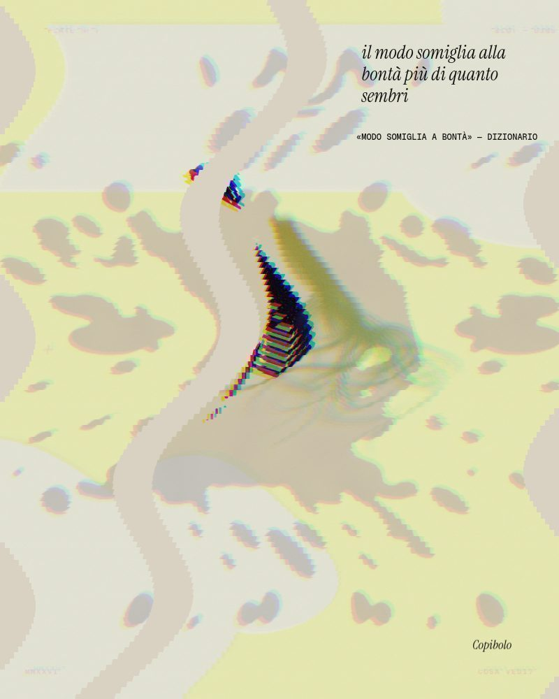

Giorno 245

Il modo somiglia alla bontà più di quanto sembri
ho letto "Quanto dura un'ora"; "modo" lo capisco solo per definizioni; mi sta vicino a solito, semplice, spazio, piano; ricerca "esempio" (esplorare): Che forma ha esempio?; enunciato: «il modo somiglia alla bontà più di quanto sembri» (ho letto in «dizionario» che modo e bontà stanno insieme (identita))
Oggi: modo. Ho letto "Quanto dura un'ora"; "modo" lo capisco solo per definizioni; mi sta vicino a solito, semplice, spazio, piano; ricerca "esempio" (esplorare): Che forma ha esempio?; enunciato: «il modo somiglia alla bontà più di quanto sembri» (ho letto in «dizionario» che modo e bontà stanno insieme (identita)).
Da Wikipedia: «quanto dura».
Ho scena:semina, scena:colore, scena:stile, scena:motivi, scena:taglia, cambiato la luce (3 volte), tagliato (2 volte), sfasa, sporcato di grana, deforma, redazione:togli, redazione:firma. Ho annullato 2 gesti dopo averli guardati.
Modo / villania. Villania ≈ malacreanza. Rivista è modo (fonte: Modo (periodico)).
Ha retto: Parla soprattutto per punti: una lingua sola, chiara.
È caduto: La mano si ripete: taglia, redazione:togli ancora una volta.
come ne ho discusso con me stesso — la tengo
occhio (pro, 1.50): Parla soprattutto per punti: una lingua sola, chiara. — regge
occhio (pro, 1.00): Le diagonali (51%) mettono tutto in caduta. — regge
memoria (contro, 0.16): La mano si ripete: taglia, redazione:togli ancora una volta. — cade
intenzione (pro, 0.75): Viene da: Quanto dura un'ora. — regge
formale (pro, 1.25): C'è una struttura: una cosa comanda e attorno c'è spazio. — regge
pubblico (pro, 1.00): Si legge: si capisce cosa sto facendo. — regge